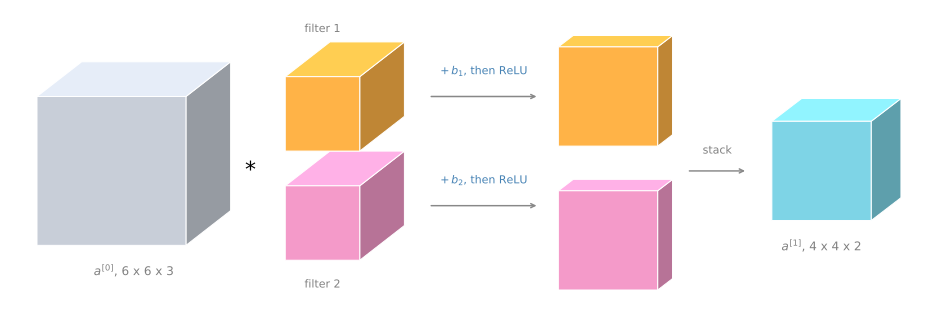
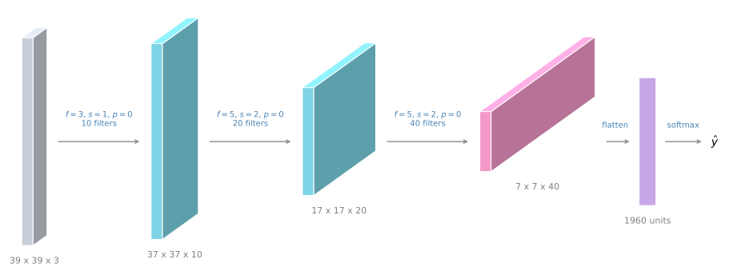

One Layer of a Convolutional Network
deep-learning
convolutional-neural-networks
computer-vision
convolution
notation
How filters, a bias, and a non-linearity form one convolutional layer, why the parameter count does not depend on image size, and the notation for a deep ConvNet.
You have seen how to take a 3D volume and convolve it with several different filters. Now it is time to build one layer of a convolutional neural network out of that, and then to stack a few such layers into a small but complete network.
From Convolution to a Layer
Take the example from the previous page. Convolving a 6 by 6 by 3 input with a first filter gives one 4 by 4 output, and convolving it with a second filter gives a different 4 by 4 output.
The final thing that turns this into a convolutional neural net layer is that for each of these you add a bias. The bias is a single real number, and thanks to Python broadcasting you add that same number to every one of the 16 elements of the 4 by 4 output. Then you apply a non-linearity, which for this illustration is a ReLU, and that gives you a 4 by 4 output after the bias and the non-linearity.
The bottom output gets its own different bias, again a single real number added to all 16 numbers, followed by the same non-linearity, which gives a different 4 by 4 output. Stacking the two results as before, you end up with a 4 by 4 by 2 volume.
Going from a 6 by 6 by 3 volume to a 4 by 4 by 2 volume in this way is one layer of a convolutional neural network.
Comparison With a Standard Layer
To map this back to one layer of forward propagation in a standard, non-convolutional neural network, remember that one step of forward propagation looked like this.
\[ z^{[1]} = W^{[1]} a^{[0]} + b^{[1]}, \qquad a^{[1]} = g(z^{[1]}) \]
where \(a^{[0]}\) was also equal to \(x\). In the convolutional analogy, the input volume plays the role of \(a^{[0]}\), which is \(x\). The filters play a role similar to \(W^{[1]}\).
During the convolution operation you took those 27 numbers per filter, really 27 times 2 because there are two filters, and multiplied them out against the input. So you are really computing a linear function to get each 4 by 4 matrix. The output of the convolution operation plays the role of \(W^{[1]} a^{[0]}\). Then you add the bias, and the result before applying the non-linearity plays the role of \(z^{[1]}\). Finally, applying the non-linearity gives the output, which becomes the activation of the next layer, \(a^{[1]}\).
So the convolution is really applying a linear operation, then you have the biases, then the ReLU. That is how you go from \(a^{[0]}\) to \(a^{[1]}\), from a 6 by 6 by 3 dimensional volume, through one layer of a neural network, to a 4 by 4 by 2 dimensional volume.
In this example there were two filters, so two features if you will, which is why the output was 4 by 4 by 2. If instead you had 10 filters, you would wind up with a 4 by 4 by 10 dimensional output volume, because you would be taking 10 of these maps rather than two and stacking them up.
Review Questions
1. What two things are added to a convolution to turn it into one layer of a neural network?
TipAnswer
A bias, which is one real number per filter added to every element of that filter’s output, and a non-linearity such as ReLU applied elementwise afterwards. Without them the layer would only be a linear operation.
1. In the convolutional layer, what plays the role of \(W^{[1]}\) from a standard network layer?
TipAnswer
The filters. Their entries are the learned weights, and sliding them over the input computes the same kind of linear function that \(W^{[1]} a^{[0]}\) computes in a standard layer.
Number of Parameters in a Layer
Here is an exercise to make sure the picture is clear. Suppose you have 10 filters, rather than two, and each is 3 by 3 by 3, in one layer of a neural network. How many parameters does this layer have?
Each filter is a 3 by 3 by 3 volume, so each filter has 27 numbers to be learned, plus the bias, which is the \(b\) parameter. That gives 28 parameters per filter. With 10 filters altogether you have
\[ 28 \times 10 = 280 \]
parameters.
Notice one nice thing about this. No matter how big the input image is, the number of parameters stays fixed at 280. The input image could be 1000 by 1000 or 5000 by 5000, and you could still use these ten filters to detect features, vertical edges, horizontal edges, or other features, anywhere in a very large image, with the same very small number of parameters.
This is really one property of a convolutional neural network that makes it less prone to overfitting than the alternative. Once you have learned 10 feature detectors that work, you can apply them even to large images, and the number of parameters is still fixed and relatively small.
Review Questions
1. A convolutional layer uses 20 filters, each 5 by 5 by 3. How many parameters does the layer have?
TipAnswer
Each filter has \(5 \times 5 \times 3 = 75\) weights plus one bias, so 76 parameters. With 20 filters that is \(76 \times 20 = 1520\) parameters.
1. Why does the input image size not appear in the parameter count?
TipAnswer
Because the same filter is slid over every position of the image, so a bigger image means more window positions, not more parameters. The parameters live in the filters and their biases only.
1. Your input is a 300 by 300 color (RGB) image, and you use a convolutional layer with 100 filters that are each 5 by 5. How many parameters does this hidden layer have, including the bias parameters?
7500
2501
7600
2600
TipAnswer
c. Each filter has to span all three color channels, so it is 5 by 5 by 3, which is \(25 \times 3 = 75\) weights, plus one bias, giving 76 parameters per filter. With 100 filters that is \(76 \times 100 = 7{,}600\). Option a forgets the biases, and options b and d forget that the filter spans three channels. Notice that the 300 by 300 input size never enters the count.
Notation for a Convolutional Layer
Here is the notation used to describe a convolutional layer \(l\) in a convolutional neural network.
If layer \(l\) is a convolution layer, then \(f^{[l]}\) denotes the filter size, so the filters in that layer are \(f^{[l]}\) by \(f^{[l]}\). The superscript square bracket \(l\) is the usual way of referring to a particular layer. Similarly, \(p^{[l]}\) denotes the amount of padding, and \(s^{[l]}\) denotes the stride.
The amount of padding can also be specified by saying that you want a valid convolution, which means no padding, or a same convolution, which means you choose the padding so that the output has the same height and width as the input.
The input to this layer is whatever the previous layer produced, so it has dimension
\[ n_H^{[l-1]} \times n_W^{[l-1]} \times n_c^{[l-1]} \]
Up to now the examples used images with equal height and width, but in general they can differ, which is why the height and the width get their own subscripts. This layer then outputs a volume of size
\[ n_H^{[l]} \times n_W^{[l]} \times n_c^{[l]} \]
The height and the width of the output come from the formula seen earlier, applied with this layer’s padding, filter size, and stride.
\[ n_H^{[l]} = \left\lfloor \frac{n_H^{[l-1]} + 2p^{[l]} - f^{[l]}}{s^{[l]}} + 1 \right\rfloor \]
The same formula with \(W\) in place of \(H\) gives the width.
\[ n_W^{[l]} = \left\lfloor \frac{n_W^{[l-1]} + 2p^{[l]} - f^{[l]}}{s^{[l]}} + 1 \right\rfloor \]
The number of channels of the output, \(n_c^{[l]}\), is just the number of filters used in this layer. With two filters the output volume was 4 by 4 by 2, and with 10 filters it would be 4 by 4 by 10.
Each filter is \(f^{[l]} \times f^{[l]} \times n_c^{[l-1]}\), because the number of channels in the filter must match the number of channels in its input. The output of the layer, after the biases and the non-linearity, is the activation \(a^{[l]}\), a 3D volume of size \(n_H^{[l]} \times n_W^{[l]} \times n_c^{[l]}\).
When you use a vectorized implementation, with batch gradient descent or mini-batch gradient descent, you output \(A^{[l]}\), a set of \(m\) activations for \(m\) examples, which is \(m \times n_H^{[l]} \times n_W^{[l]} \times n_c^{[l]}\). The index over training examples comes first, then the three volume dimensions.
The weights of the layer are all of the filters put together, so they have the dimension of one filter times the total number of filters. The bias has one real number per filter, so it is a vector of \(n_c^{[l]}\) numbers, although in code it is more convenient to represent it as a \(1 \times 1 \times 1 \times n_c^{[l]}\) four dimensional tensor.
| Quantity | Notation | Dimension |
|---|---|---|
| Filter size | \(f^{[l]}\) | |
| Padding | \(p^{[l]}\) | |
| Stride | \(s^{[l]}\) | |
| Number of filters | \(n_c^{[l]}\) | |
| Input | \(a^{[l-1]}\) | \(n_H^{[l-1]} \times n_W^{[l-1]} \times n_c^{[l-1]}\) |
| Each filter | \(f^{[l]} \times f^{[l]} \times n_c^{[l-1]}\) | |
| Weights | \(W^{[l]}\) | \(f^{[l]} \times f^{[l]} \times n_c^{[l-1]} \times n_c^{[l]}\) |
| Bias | \(b^{[l]}\) | \(n_c^{[l]}\), coded as \(1 \times 1 \times 1 \times n_c^{[l]}\) |
| Output | \(a^{[l]}\) | \(n_H^{[l]} \times n_W^{[l]} \times n_c^{[l]}\) |
| Batch of outputs | \(A^{[l]}\) | \(m \times n_H^{[l]} \times n_W^{[l]} \times n_c^{[l]}\) |
NoteOrdering of the Dimensions
There is no completely universal standard convention about the ordering of height, width, and channel. If you look at source code on GitHub, or at open source implementations, you will find that some authors put the channel first instead, and you sometimes see that ordering of the variables. Several common frameworks even have a parameter for whether to list the number of channels first or last when indexing into these volumes. Both conventions work fine as long as you are consistent. These pages list height and width first, and the number of channels last.
That is a lot of notation, and there is no need to memorize all of it. Working through the examples is what makes it familiar. The key point is how one layer of a convolutional neural network works, and what the computation is that takes the activations of one layer and maps them to the activations of the next layer.
Review Questions
1. Layer \(l\) has \(n_H^{[l-1]} = n_W^{[l-1]} = 28\), \(n_c^{[l-1]} = 6\), \(f^{[l]} = 5\), \(s^{[l]} = 1\), \(p^{[l]} = 0\), and 16 filters. What is the shape of \(a^{[l]}\)?
TipAnswer
The height and width are \(\lfloor (28 + 0 - 5)/1 + 1 \rfloor = 24\), and the number of channels is the number of filters, so \(a^{[l]}\) is 24 by 24 by 16.
1. For that same layer, what is the shape of \(W^{[l]}\) and of \(b^{[l]}\)?
TipAnswer
\(W^{[l]}\) is \(5 \times 5 \times 6 \times 16\), which is one filter of shape \(5 \times 5 \times 6\) for each of the 16 filters. And \(b^{[l]}\) has 16 numbers, one per filter, usually stored with shape \(1 \times 1 \times 1 \times 16\).
1. Why does \(A^{[l]}\) have four dimensions while \(a^{[l]}\) has three?
TipAnswer
Because \(A^{[l]}\) holds a whole mini-batch of \(m\) examples, so it adds the example index as a leading dimension in front of the height, width, and channel dimensions of one example.
Simple Convolutional Network Example
Now that you know how one layer works, let us stack a few of them together and go through a concrete example of a deep convolutional neural network.
Suppose you have an image and you want to do image classification, or image recognition. You want to take an image \(x\) as input, and decide whether it is a cat or not, 0 or 1, so it is a classification problem.
For the sake of this example the image is fairly small, 39 by 39 by 3. This choice just makes some of the numbers work out a bit better. So \(n_H^{[0]} = n_W^{[0]} = 39\), and \(n_c^{[0]} = 3\).
Say the first layer uses a set of 3 by 3 filters to detect features, so \(f^{[1]} = 3\), with a stride of 1 and no padding, which is a valid convolution, and say you use 10 filters. Then the activations of this next layer are 37 by 37 by 10, where the 10 comes from the fact that you used 10 filters, and the 37 comes from the formula.
\[ \frac{39 + 0 - 3}{1} + 1 = 37 \]
So \(n_H^{[1]} = n_W^{[1]} = 37\) and \(n_c^{[1]} = 10\), and this becomes the dimension of the activation at the first layer.
Now say you have another convolutional layer, and this time you use 5 by 5 filters, so \(f^{[2]} = 5\), with a stride of 2, no padding, and 20 filters. The output of this is another volume, this time 17 by 17 by 20. Notice that because you are now using a stride of 2, the dimension has shrunk much faster. The 37 by 37 has gone down in size by slightly more than a factor of two, to 17 by 17. And because you are using 20 filters, the number of channels is now 20. So \(n_H^{[2]} = n_W^{[2]} = 17\) and \(n_c^{[2]} = 20\).
Apply one last convolutional layer, with a 5 by 5 filter again, a stride of 2 again, no padding, and 40 filters. Working through the same arithmetic, you end up with 7 by 7 by 40.

So what you have done is take a 39 by 39 by 3 input image and compute 7 by 7 by 40 features for that image.
Finally, what is commonly done is to take that 7 by 7 by 40 volume, and since \(7 \times 7 \times 40 = 1960\), flatten it or unroll it into 1960 units. Just flatten it out into one long vector, and then feed that vector to a logistic regression unit or a softmax unit, depending on whether you are trying to recognize cat or no cat, or trying to recognize any one of several different objects. That gives the final predicted output of the neural network.
To be clear, this last step is just taking all 1960 numbers and unrolling them into a very long vector, so that you have one long vector you can feed into a softmax or a logistic regression in order to make the prediction for the final output.
Trends as You Go Deeper
This would be a pretty typical example of a ConvNet. A lot of the work in designing a convolutional neural net is selecting hyperparameters such as these. What is the filter size? What is the stride? What is the padding, and how many filters are used? Later sections give some suggestions and some guidelines on how to make these choices.
For now, one thing to take away is that as you go deeper in a neural network, you typically start off with larger images, such as 39 by 39. The height and the width stay the same for a while and gradually trend down as you go deeper. Here it has gone from 39 to 37 to 17 to 7. Meanwhile the number of channels generally increases. Here it has gone from 3 to 10 to 20 to 40, and you see this general trend in a lot of other convolutional neural networks as well.
Three Types of Layers
It turns out that in a typical ConvNet there are usually three types of layers. One is the convolutional layer, often denoted a Conv layer, and that is what this network has been using. The two other common types are the pooling layer, often called Pool, and the fully connected layer, called FC.
Although it is possible to design a pretty good neural network using just convolutional layers, most neural network architectures also have a few pooling layers and a few fully connected layers. Fortunately, pooling layers and fully connected layers are a bit simpler to define than convolutional layers, and they come up in the following sections.
Review Questions
1. The second layer of the example takes a 37 by 37 by 10 input, with \(f = 5\), \(s = 2\), and \(p = 0\). Show why the output is 17 by 17.
TipAnswer
\[ \left\lfloor \frac{37 + 0 - 5}{2} + 1 \right\rfloor = \left\lfloor \frac{32}{2} + 1 \right\rfloor = 17 \]
The number of channels becomes 20, since that layer uses 20 filters.
1. Why is the final volume flattened before the output unit?
TipAnswer
Because a logistic regression unit or a softmax unit expects a plain vector of numbers, not a 3D volume. Unrolling the 7 by 7 by 40 volume gives one vector of 1960 numbers that can be fed straight into that unit.
1. What are the two general trends in the volume shapes as you go deeper into a ConvNet?
TipAnswer
The height and width tend to decrease, from 39 to 37 to 17 to 7 in this example, while the number of channels tends to increase, from 3 to 10 to 20 to 40.
1. What are the three types of layer found in a typical ConvNet?
TipAnswer
Convolutional layers (Conv), pooling layers (Pool), and fully connected layers (FC).
That is your first full example of a convolutional neural network, built out of convolutional layers only. The next section covers pooling layers, which are simpler than convolutional layers and appear in almost every architecture.